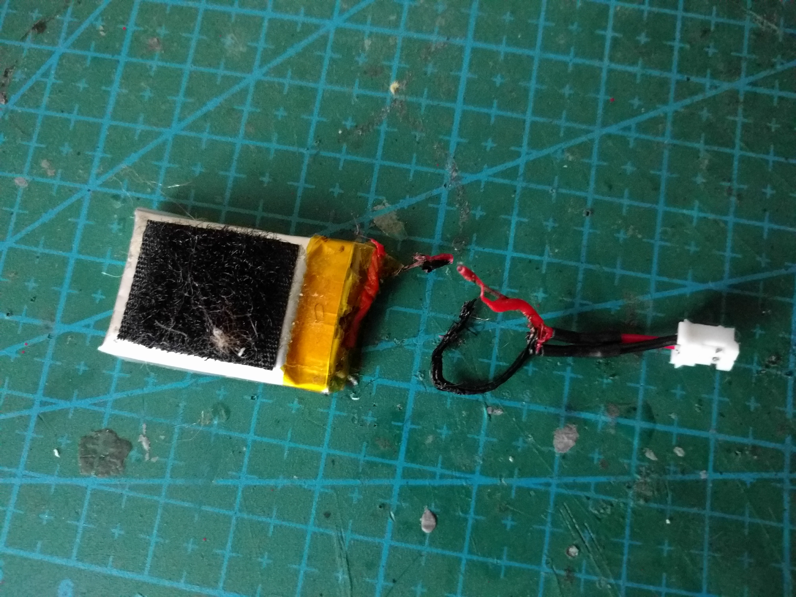
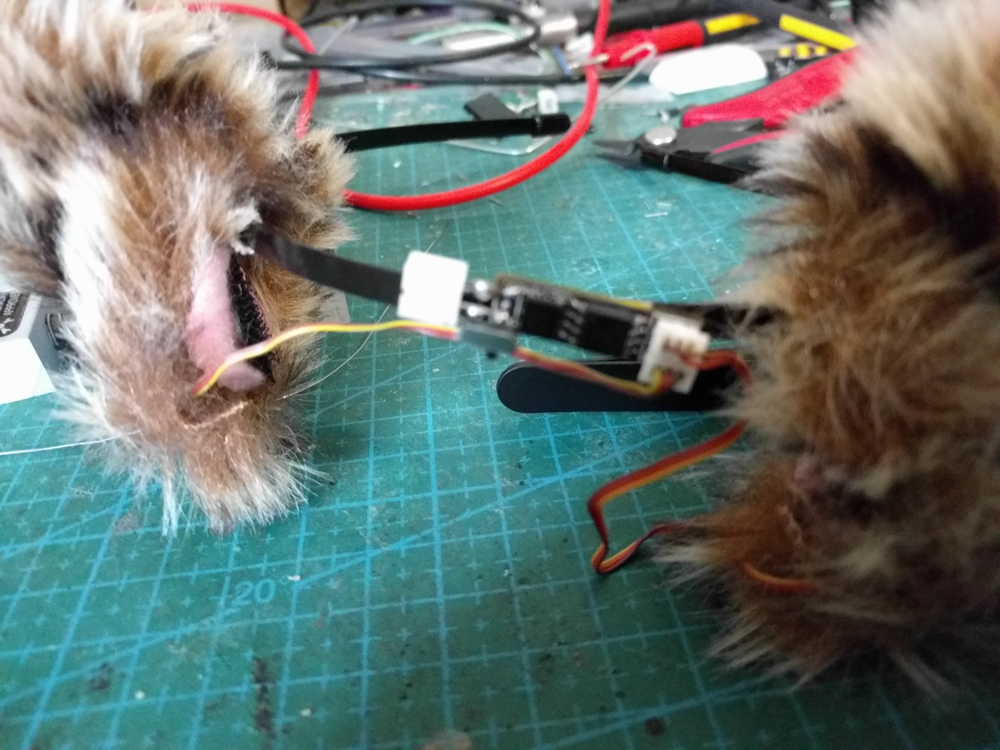

Maker Faire¶
Published on 2017-09-12 in Mechatronic Ears.
There was a maker faire here in Zürich recently, and one of the more popular projects that I showed off was this. It was by a complete accident, I just grabbed the ears on my way out, but turns out that people really liked to try them on and shot videos of themselves with them.
On the first day I disconnected and re-connected the battery so many times, that I finally broke one of the wires. So in the evening I decided to add a power switch to the board, using one of the small switches I had for the PewPew FeatherWing . The next day the first thing I did was break that. But no problem, I have a soldering iron with me, I can fix it, right?
Turns out that soldering when you are half-conscious in the morning and tired after a day of maker faire is a bad idea. I didn’t disconnect the battery, and I shorted the leads with my iron, which resulted in this:
The next day I rescued that battery, and soldered the power switch and the plug in a more permanent way:
Now I’m thinking about re-doing the PCB with the switch and a LiPO charging circuit built-in…